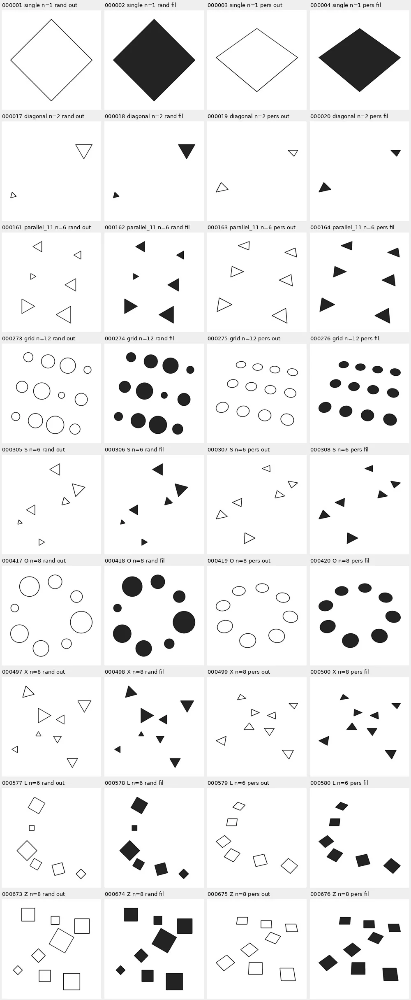
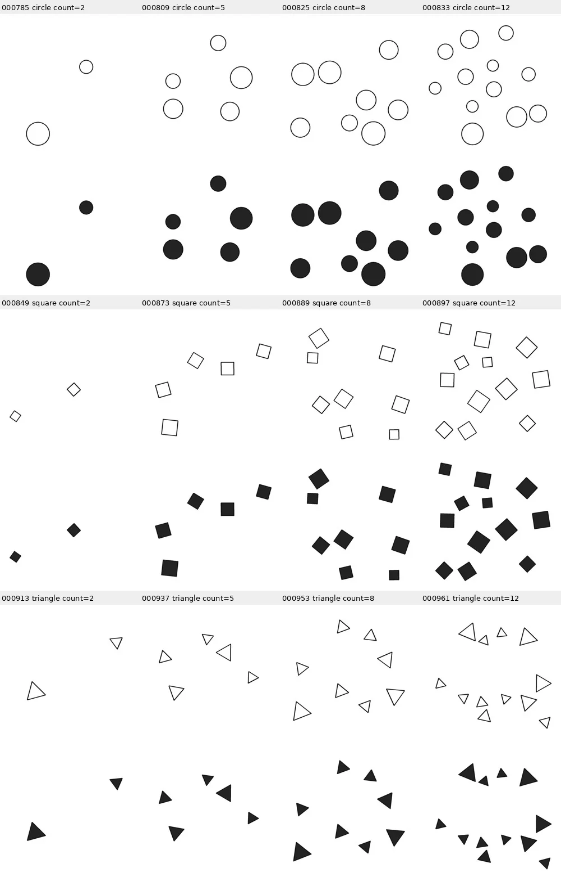
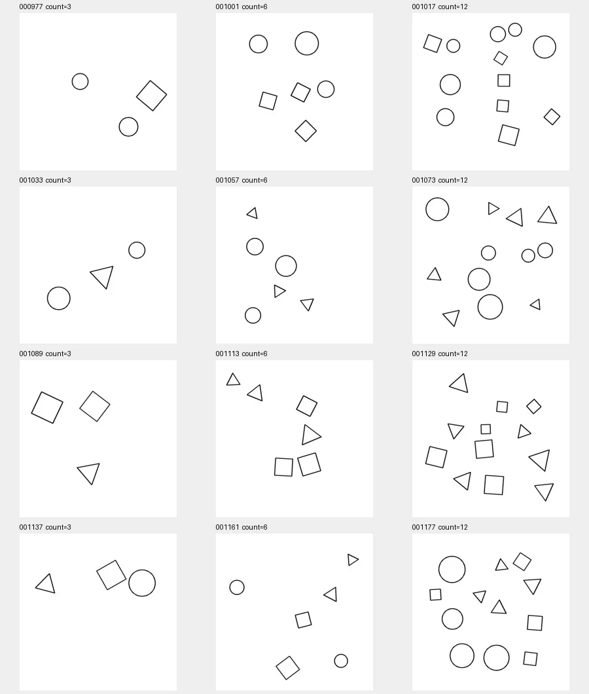
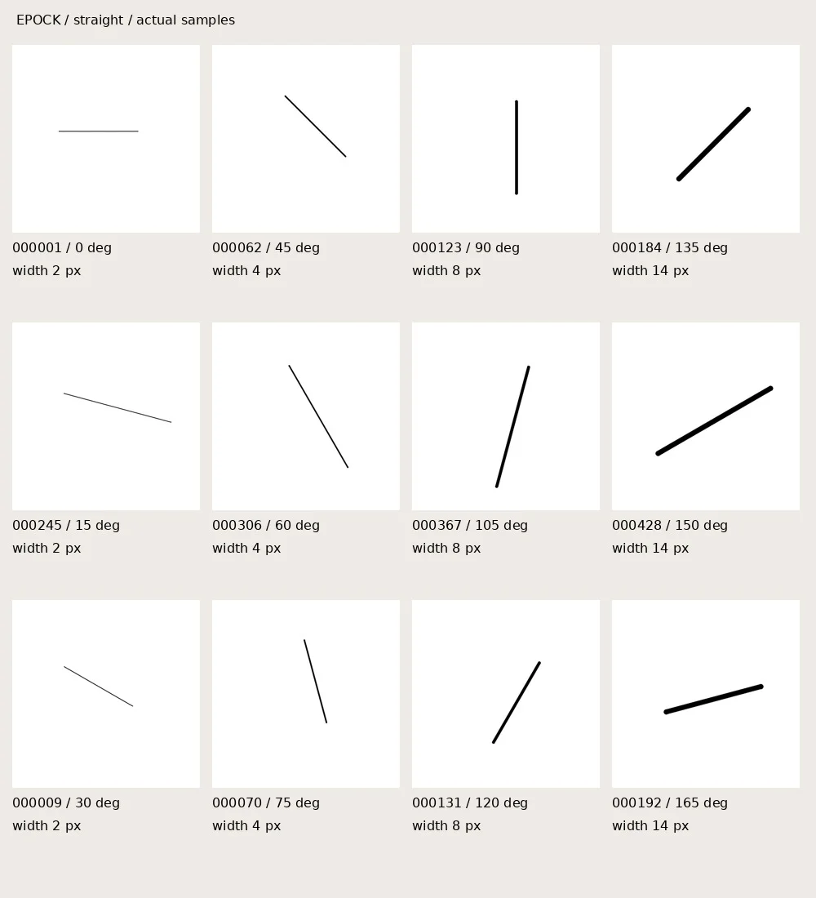
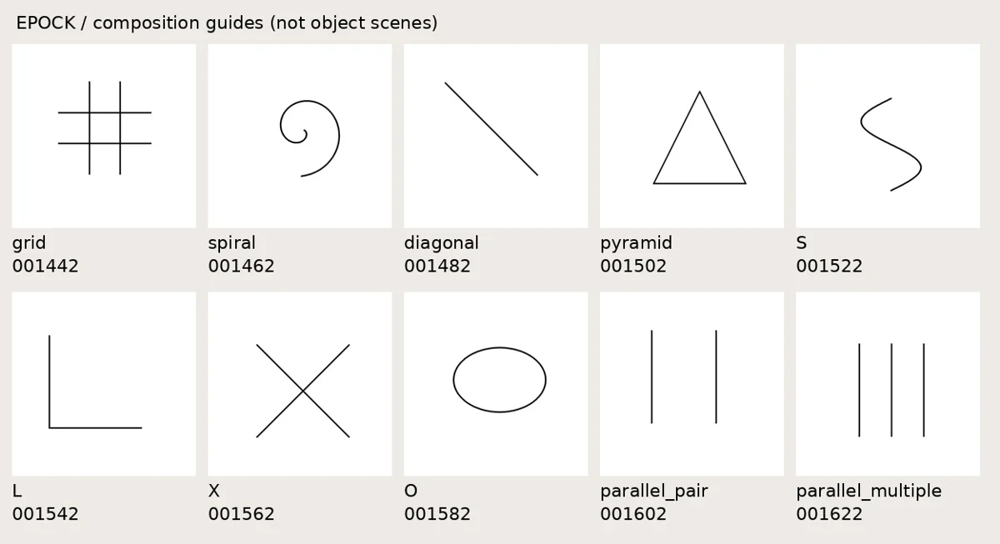
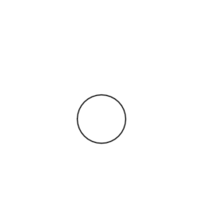
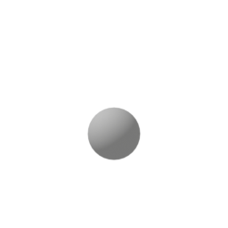
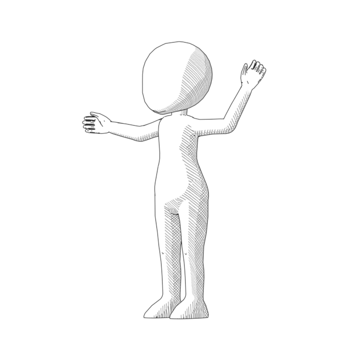
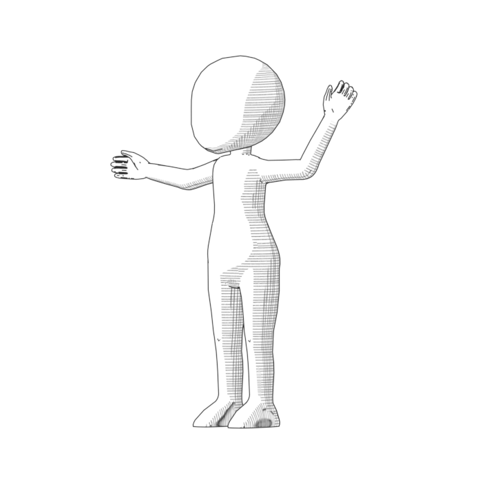
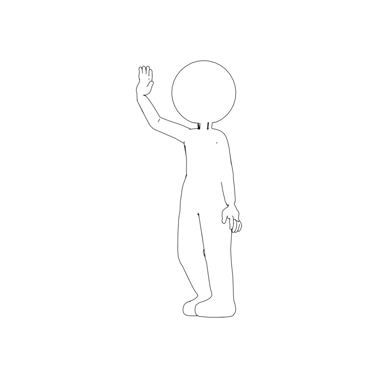

학습데이터는 AI가 연습할 때 보는 그림과 설명입니다. 여기 있는 샘플은 사람이 도구로 만든 연습 재료입니다. AI가 배운 뒤 스스로 만들어 낸 결과와 구분합니다.
2026년 11월 18일 확인 기준으로 원·정삼각형·정사각형을 이용한 그림과 JSON 설명 파일 1,068쌍을 준비했습니다. 그림은 512×512 크기입니다. 같은 장면을 외곽선과 검정 채움 두 방식으로 만듭니다. 모든 평면도형이나 입체도형을 다 만든 것은 아닙니다.
| 버전 | 추가한 자료 | 누계와 번호 |
|---|---|---|
| VR0.03 | 기본 배열 660쌍 | 660쌍. 000001~000776 중 660개 |
| VR0.04 | 같은 도형의 무작위 배열 192쌍 | 852쌍. 추가 번호 000777~000968 |
| VR0.05 | 서로 다른 도형의 혼합 배열 216쌍 | 1,068쌍. 추가 번호 000969~001184 |
기본 배열은 단독, 대각선, 11자 평행열, 격자, S·O·X·L·Z 모양입니다. 도형 수는 1·2·3·4·5·6·8·12개로 바꾸되, 개수가 적어 뜻이 없는 배열은 만들지 않았습니다. 실제 크기를 바꾼 장면과 멀리 있어 작아 보이는 투시 장면을 구분합니다. 원이 기울어 타원처럼 보여도 원본 종류는 원으로 기록합니다. 투시가 있다고 입체도형 자료가 되는 것은 아닙니다.

VR0.04는 같은 종류의 도형을 제각각 놓았습니다. 위치·크기·회전을 바꾸되, 화면 밖으로 나가거나 겹치거나 너무 작아지는 경우는 뺐습니다. 완전히 아무 제약도 없는 무작위는 아닙니다. 원근 변화가 없는 직교 투영이라 큰 도형이 가까이 있다는 뜻도 아닙니다.

VR0.05는 원+정사각형, 원+정삼각형, 정사각형+정삼각형, 세 종류 모두를 섞었습니다. 두 종류는 지정된 2~12개, 세 종류는 지정된 3~12개로 구성합니다. 종류별 개수 차이는 최대 1개입니다. 겹치지 않게 놓고 원근 변화는 넣지 않았습니다.

전달 ZIP에서 660·192·216쌍과 서로 겹치지 않는 번호를 확인했습니다. 제작 기록에는 기존 852쌍 보존, 픽셀 중복 없음, 같은 장면이 학습·평가 양쪽에 섞이지 않음이 기록되어 있습니다. 그러나 128px로 줄였을 때 가는 선이 보이는지, 선 자료와 섞는 비율, 여러 도형의 조건을 모델에 전달하는 방법과 생성 품질은 별도 시험이 필요합니다. 타원·직사각형·다각형·별·입체·인체가 모두 준비된 것은 아닙니다.
2026년 11월 16일 기록입니다. 직선·호·자유곡선은 각각 480쌍, 구도 가이드는 200쌍입니다. 굵기·각도·길이·위치·휘어진 정도를 바꾸었습니다. 512×512 그림과 같은 번호의 JSON, 엑셀 목록을 준비했습니다. 학습용은 1,312개, 평가용은 328개입니다.


파일 짝, 잘림, 픽셀 중복과 같은 원본군이 학습·평가에 섞이는지 확인한 제작본입니다. 구도별 평가 자료의 원본 수는 아직 적습니다. 이 개수만으로 낯선 그림도 잘 만든다고 주장하지 않습니다. 당시에는 외부 파일을 읽는 학습 코드 연결이 검증 전이었고, 이후 직선에 한해 파이프라인 실행을 확인했습니다.
다음에는 회전뿐 아니라 기울임, 가로세로 크기를 다르게 바꾸기, 곡선의 휘어짐 바꾸기를 시험합니다. 손으로 그린 선의 굵기 변화도 별도 표현으로 살핍니다. 학습할 때 잠깐 더하는 잡음과 완성 그림에 남기는 잡음은 다릅니다. 작은 크기로 줄였을 때 선이 사라지지 않는지 먼저 봅니다.
원·삼각형·T자·구·원뿔·육면체를 Blender로 만들며 위치, 회전, 크기, 간격과 카메라를 나누어 기록했습니다. 당시에는 24장면×4스타일, 최대 96쌍의 작은 시험을 제작·검수 중이었습니다. 평면 선의 출력 결함을 발견해 다시 만들고 있었으므로, 전체 승인이나 학습 투입 완료를 뜻하지 않습니다.



이때 해칭은 화면 위치에 고정한 시험이므로 곡면을 따르는 최종안이 아닙니다. 보이는 도형 수인 원샷·투샷, 화면을 얼마나 채우는지 나타내는 롱샷·클로즈업, 카메라 높이인 로우앵글·아이레벨·하이앵글은 서로 다른 항목입니다. 배치한 수와 실제로 보이는 수도 대조합니다.
images/000001.png와 JSON/000001.json처럼 이름을 맞춥니다. 같은 장면의 스타일들은 장면 번호로 연결합니다. 파일 누락·중복, 실제 출력 크기, 가림·잘림, 카메라와 물체의 위치, 코드 버전, 재현에 필요한 정보와 학습·평가 분리를 확인합니다. JSON에 적힌 조건을 모델이 실제로 받을 수 있는지도 별도 시험합니다.
작가는 8등신뿐 아니라 2·3등신으로도 바꾸기 쉽도록 몸을 단순하게 만들었습니다. 기본 모형을 고른 것은 완료했지만, 여러 비율로 바꿔도 잘 움직이는지는 따로 검증합니다.

11월 16일까지의 인체 기록에는 3·4등신 A타입 T자 자세 96쌍이 있습니다. 실루엣·외곽선·카툰 명암·해칭 네 종류와 엑셀 목록입니다. 픽셀이 서로 다른 이미지는 84개이고 실루엣 중복 12개를 표시했습니다. 동작 자료나 학습이 모두 완성된 뜻은 아닙니다. 인체 파일은 000011~000014의 끝자리 1~4로 스타일을 표시하고 다음 장면은 000021로 시작합니다. 선 자료의 번호 규칙과 섞지 않습니다.
바닥에 쪼그려 그리기, 숨기듯 웅크려 그리기, 엎드려 즐겁게 그리기, 턱을 괴고 지루하게 그리기를 시험했습니다. 이 당시 바닥·도구 접촉과 손 움직임에 문제가 있었고 수정 포즈는 승인 전이었습니다. 얼굴·관절의 보조선은 외곽보다 가늘고 옅게 하며 보조선 없는 버전과 구분합니다.


같은 정면 자세 네 장을 비교했습니다. 실루엣은 유지되었고, 선화는 둥근 머리와 몸의 윤곽이 연결되며 사각 조각선이 줄었습니다. 회색 입체는 부피가 읽히기 시작했지만 대비가 약했습니다. 카툰 명암은 2~3단계 밝기가 잘 나뉘지 않아 다시 조정해야 했습니다. 목의 겹친 선, 작은 잔선, 축소했을 때 굵기도 확인해야 합니다.




원래 계획에는 실루엣, 메인선, 메인선+가이드선, 몸을 여러 도형으로 나눈 표현, 움직임 흐름선이 있었습니다. 네 장 시험은 이 전체 목록이 아닙니다. 가이드선·인체 도형화·동세선은 포함되지 않았고 회색 입체·카툰 명암을 따로 시험했습니다. 모든 표현을 첫 학습에 한꺼번에 섞을지도 아직 결정할 실험입니다.
당시 768×768 RGB PNG 네 장과 JSON 네 개를 읽었습니다. JSON에는 v0.3.1, 86번 프레임, 정면, 공통 장면과 원본군 번호가 있었습니다. 크기와 스타일은 대응했지만, 카메라 위치가 (0,0,0)이고 행렬은 변화 없음인데 X 회전은 약 90도로 적혀 있어 실제 카메라와 저장 시점을 다시 대조해야 했습니다. review는 모두 unreviewed, 즉 검수 전이었습니다.
파일명·스타일·해시, 임시 체형·포즈 번호, 모형·프레임·카메라·렌더 설정과 코드 버전을 확인합니다. 파일명에 (1)이 있다는 이유만으로 오류를 단정하지 않습니다. 설명 파일을 읽은 것과 Blender 원본을 다시 실행해 같은 결과를 확인한 것은 다릅니다.
AI로 다양한 체형 이미지를 만든 뒤 입체 메시로 바꾸는 길과, 작가가 단순한 인체를 직접 만들어 다듬는 길을 함께 살폈습니다. 수정이 적게 필요한 완성도와 특정 체형·등신비·성별에 치우치지 않는 다양성을 기준으로 봅니다. CharacterDeform_for_tripo3d.ipynb는 앞·옆·뒤 그림을 나누는 준비 도구이지 모델 학습 코드가 아닙니다.